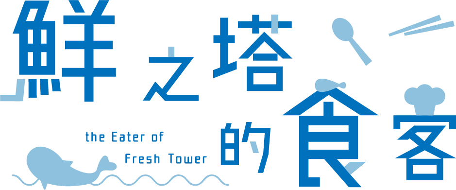

味
補
鮮
知
嘉義大學數位系110級畢業專題
嘿！我們昨晚
吃了什麼
？
你或許記得綠色的是花椰菜，
紅色的是胡蘿蔔，
不過，盤子裡的魚究竟叫什麼呀？
哎呀，想不出答案也沒關係，
讓我們一起跟蔚蔚從餐桌回溯，
認識我們的食魚文化吧！
STOP ——————————
01
別用觸腕旋轉我
「頭足類表示花枝亂站。」
MORE
STOP ——————————
02
天黑請閉殼
「要貝類閉嘴……很不禮貌。」
MORE
STOP ——————————
03
鰭士團招募中
「我們會定期舉辦魚類甩尾大賽。」
MORE
STOP ——————————
04
發出可剝的聲音
「蝦類覺得宇宙害羞。」
MORE
© 嘉義大學數位系110級畢業專題 味補鮮知 - 海鮮的秘密
STOP ——————————
Final
鮮之塔的食客
「用小遊戲來一決勝負吧！」
經過一場海底之旅，
想必你也知道不少海鮮的秘密了吧？
旅行的最後，
我們準備了一場愉快的小測驗，
按下扭蛋機的按鈕，
證明你也是偉大鮮知的一員吧！
點我下載！

遊戲類型：冒險/劇情向/猜題遊戲
遊玩時間：約10至15分鐘
Windows版下載
MacOS版下載
Prologue
前言
Top
首頁
Stop-1
別用觸腕旋轉我
Stop-2
天黑請閉殼
Stop-3
鰭士團招募中
Stop-4
發出可剝的聲音
Epilogue
尾聲